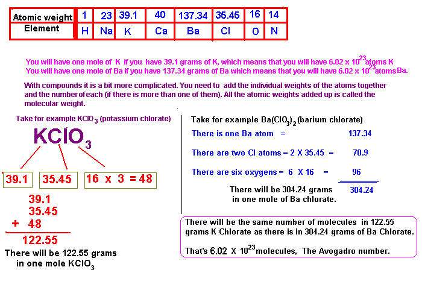

A mole of any substance is the weight of the substance that contains a certain number of molecules (or atoms) of the substance. One mole of a substance contains 6 X 1023 molecules (atoms if its an element). A molecule of a compound will have a certain very very small weigh, and the smaller the weight of each molecule (or atom) the smaller the total weight of the substance you will need to give you a certain number of molecules.
The mole is used because when you speak of a mole of something you are talking about a certain number of molecules (or atoms) of that substance and is very handy when you are trying to figure out how much of one substance you need to mix with another substance so that each molecule (or atom) will have a 'partner'.
In lots of cases one molecule of a (greedy) substance will demand two 'partners' or more and its simply a matter of giving one mole of that (greedy) substance two moles (or three or...) of the other substance.
How do you get a mole of something?
If you are dealing with an element, you simply take its atomic weight and take that amount of grams of the substance in order to have a mole.
With compounds you must add up the contribution of each element in the molecule so that you get the total atomic weight and that number in grams in a mole of the compound.
With electrons (electricity) its not so easy as you cannot take (say) "20 grams" of electricity and add it to our cell. Electricity is a flow of electrons and amps is the measure of the amount of electrons that flow every second. So in order to get a certain number of electrons, one mole we are interested in, we must let one amp flow for 26.8 hours to get one mole of electrons. Thats called 26.8 Ah (Ampere hours). If we have a current of 10 amps we only need to let that current flow for 2.68 hours for to get our mole of electrons. (NOTE: 2.68 hours = 2 hours: 41 minutes)

HIT THE BACK BUTTON ON YOUR BROWSER